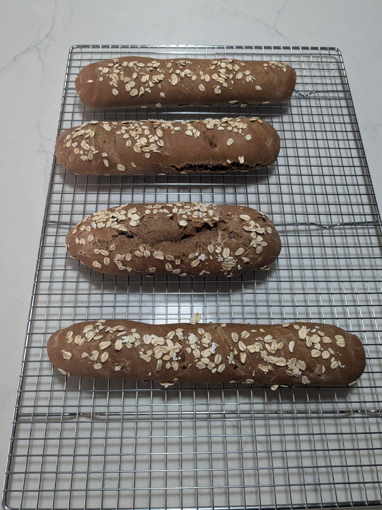

Ingredients
Directions
Chef's Notes
Baking Timeline
| Step | Direction | Time (min) | Notes |
|---|---|---|---|
| 1 | Proof yeast | 5 | |
| 2 | Combine and knead | 5 | |
| 3 | Shape and proof | 90 | |
| 4 | Roll, score, oat topping, proof | 40 | Preheat oven to 350°F |
| 5 | Bake @350 | 30 | Add ice cubes in spare baking sheet |